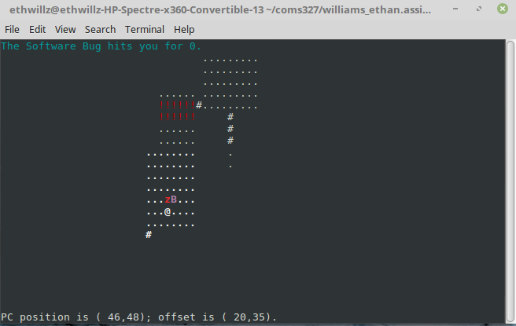

Ease of Use
Ease of Use is a social network for fashion, where users can share all of
their favorite pieces with their followers and gain inspiration from other
users. The project was built with Java and Android Studio using Firebase
for their NoSQL database and authentication.

ASCII Dungeon Game
This is a console dungeon game done for Computer Science 327, advanced
programming techniques in C & C++; The game has a randomly generated
dungeon with monsters and equipment throughout. In addition to C and C++,
I also became skilled in Linux.